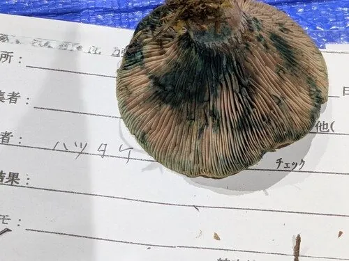

真菌 · 真菌界
红汁乳菇 Lactarius hatsudake

菌盖带绿色斑纹、受伤后流出红色乳汁的乳菇，与松树共生，是中国南方常见的野生食用菌，必须炒熟后食用。
- 分类
- 门担子菌门纲伞菌纲目红菇目科红菇科属乳菇属
- 栖息环境
- 松林和针阔混交林的地面，与松树形成外生菌根
- 地理分布
- 中国云南、四川、湖南、江西、福建等地，东亚其他地区也有分布
- 保护级别
- 暂无评估（IUCN 未评估，中国未列入重点保护名录）
物种志
红汁乳菇是担子菌门红菇目的外生菌根真菌，子实体单生或群生。菌盖呈半球形至平展，中央下凹，直径 4–12 cm，表面橙红色至砖红色，常带绿色斑块，潮湿时略黏；菌肉橙红色，受伤后流出暗红色乳汁；菌褶密集，橙黄色，受伤后变绿；菌柄圆柱形，中空；孢子印淡黄色。
红汁乳菇与松树形成外生菌根，多生于松林和针阔混交林的地面，夏秋季出菇，在中国云南、四川、湖南、江西、福建等地有分布。它的菌肉脆嫩、味道鲜美，是南方林区常见的野生食用菌，可炒食或炖汤，但必须充分加热，且不要与不明菌类混采。受伤后流出暗红色乳汁，是它最重要也最直观的识别特征。
形态与习性
- 菌盖直径 4–12 cm，橙红色带绿色斑块
- 菌肉受伤后流出暗红色乳汁
- 菌褶橙黄色，密集，受伤后变绿
- 菌柄圆柱形，中空
- 孢子印淡黄色
- 食用性可食，必须充分加热
趣味知识
- 红汁乳菇受伤后会流出暗红色的乳汁，这是它最显著的识别特征。
- 它的菌盖常带绿色斑块，与橙红色的底色形成对比。
- 红汁乳菇与松树形成外生菌根，多出现在松林中。